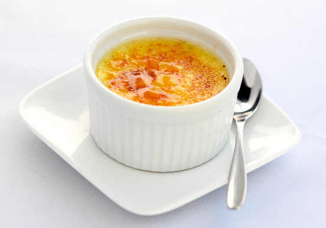

Crème Brûlée
Crème Brûlée is een nagerecht waar je veel tijd voor over moet hebben.
Ingrediënten
- 1 vanillestokje
- 250 ml verse slagroom
- 250 ml halfvolle melk
- 5 middelgrote eieren
- 100 gram kristalsuiker
- 50 gram witte basterdsuiker
Bereidingswijze
- Verwarm de oven voor op 125 °C. Halveer het vanillestokje in de lengte
en schraap met een mespunt het merg eruit. Breng de slagroom en melk
met het vanillestokje en -merg aan de kook. Laat op laag vuur 5 min.
trekken. Verwijder het vanillestokje.
- Splits de eieren en doe de eidooiers met de suiker in een grote kom.
Klop door elkaar. De eiwitten gebruik je niet. Schenk de hete room erbij
en roer tot het mengsel wat dikker wordt. Verdeel over de schaaltjes. Zet
de schaaltjes voorzichtig op een rooster in de oven. Laat de crème brûlée
in ca. 45 min. gaar worden en helemaal stollen.
- Laat 30 min. op kamertemperatuur afkoelen en verder opstijven. Dek
de schaaltjes af en zet ze minimaal 2 uur in de
koelkast. Verwarm de ovengrill voor op de hoogste stand. Neem de schaaltjes uit de koelkast en
bestrooi ze met de basterdsuiker. Zet ze vlak onder het grillelement totdat
de suiker gesmolten is en bruin begint te kleuren. Let op: dit duurt maar 1
min.
Hier onder ziet u een voorbeeld van een van onze Crème Brûlée's.
